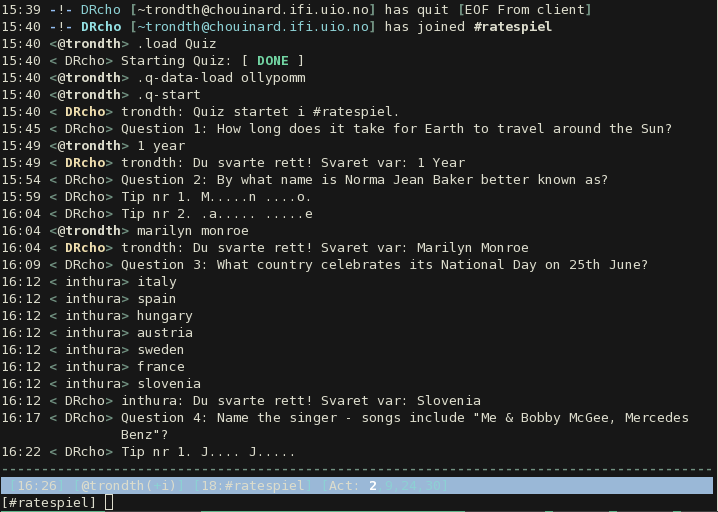

The Quiz-plugin for DasBot began as a project in INF3331. This page is based on the report page for that project.
The plugin can run quizzes in one or more irc-channels. You can load questions from text files in the same format as Moxquizz, and use different sets of questions in different channels.
The plugin comes with a Makefile, that installs DasBot with plugins and questions from Moxquizz. In addition to this, you will need Python 2.7 with sqlite support. Other DasBot-plugins have additional requirements. I recommend to make a virtual environment for python, to install necessary modules easy with pip install.
The plugin will run on any machine, but I have experienced socket problems on shared ifi servers when having short time between questions. The DasBot core system is under rewriting to deal with some of these issues. This development branch of DasBot is called socket-abs.
The delivered version of the plugin, is found here.
For updated versions:
Run make, for installing this plugin together with DasBot and questions from moxquiz in a DasBot subtree of current folder.
cd to DasBot/src, configure your bot: create a GlobalConfig.py based on GlobalConfig.py.template - you will have to enable Cronjobs, and you should change nick and startup channel. Cronjobs are enabled in this line:
# CRON JOB BOT config
START_CRON_BOT = TrueRun bot with:
python2.7 dasbot
The preinstalled test-database uses the secret secret for encrypting passwords.
Login to the admin test user with sending the bot this message through irc:
.login admin rootmeLoad Quiz-plugin with:
.load QuizStart Quiz with random questions:
.q-startThis plugin is tested with version 0.24 and 0.24a of DasBot runned in version 2.7 of python.
This is a roadmap for further development.